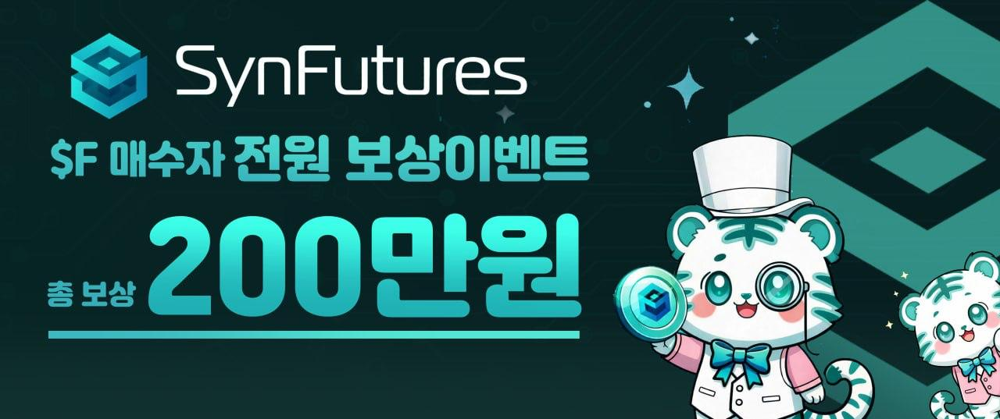
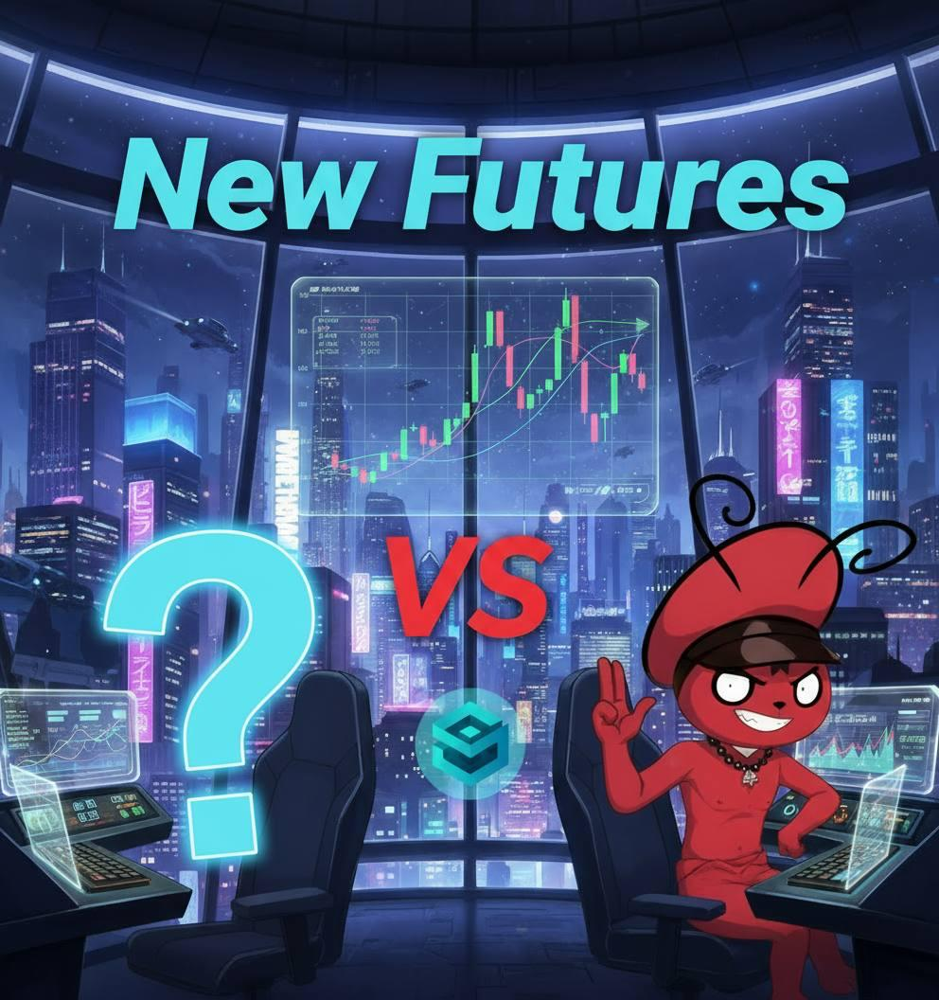

Sentient Korea Holder Onboarding Campaign 제안서 (최종본)
버전: vFinal · 대상: Upbit/Bithumb 동시 캠페인 · 통화: USDT/KRW
1. 제안 목적
소액홀더를 늘려 Sentient 보유 경험 및 추가매수로 이어져 Sentient 토큰 홀더 커뮤니티를 확장시키기 위함.
2. 캠페인 개요
대상 거래소:
업비트 + 빗썸
핵심 흐름: 첫 매수 → 첫 보유 → 추가매수 → 장기 홀딩
토큰 덤핑 유도형 이벤트가 아닌, 홀더 전환형 온보딩
3. 총 예산
총 35,000 USDT
운영 예산:
20,000 USDT
유저 리워드:
15,000 USDT
(KRW 로컬 바우처 우선)
4. 캠페인 기간 (총 1개월)
1주차
: Buy 이벤트
2주차
: Hold 인증
3주차
: 추가매수 + 홀딩
4~5주차
: 한달 풀 홀딩 인증/개별 확인 후 리워드 지급
5. 검증 방식
거래소 공개 API 제약 대응: 전용 신청폼(네이버폼) 기반 증빙
매수/보유 스크린샷 + 필요시 영상 인증 + 계정 중복 검증
다계정/봇 필터링 후 최종 리워드 확정
6. KPI (수정 반영)
한국 거래소에서 매수·홀딩한 홀더 수
이벤트 총 참여자 수
1주차 Buy 이벤트 후 추가매수 참여자 수
7. 기대 효과
신규 소액 홀더 유입 및 커뮤니티 확장
추가매수 전환 데이터 확보
거래소 내 온체인/오프체인 참여지표 동시 강화
8. 첨부 예시 이미지
예시 1.
New Futures VS 컨셉 배너
예시 2.
SynFutures KR 리워드 배너

예시 3.
New Futures VS 컨셉 배너 (추가본)
